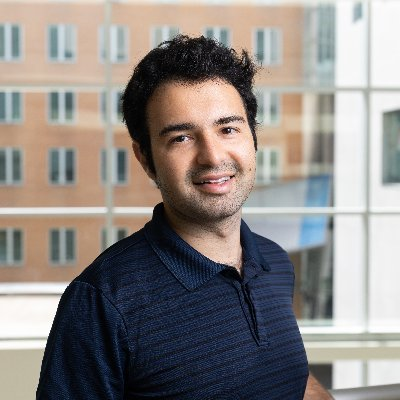
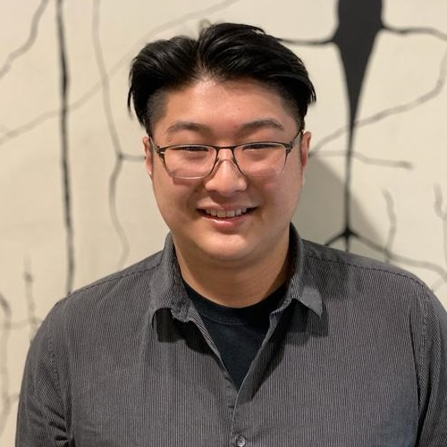

Organizers


Aran Nayebi • X
Carnegie Mellon University

Elliott Abe • X
University of Washington
The brain is not a computer in a vat; it evolved to control a body interacting with a complex, dynamic environment.
To understand complex naturalistic behavior and its neural underpinnings, we must model this fundamental closed loop.
This workshop brings together a diverse group of experimentalists and theorists to explore a powerful, growing approach in neuroscience:
using agent-based models to link neural processes to the complex, multi-step behaviors they produce.
As these approaches proliferate, new questions arise: What levels of detail are necessary to capture animal behavior?
How should we balance abstraction versus realism in embodiment? To what extent do neural and behavioral data constrain or validate these models?
How can such models complement ongoing experiments and inspire new ones?
This year, we aim to highlight three complementary strands of work, across multiple scales of modeling:
The first uses cognitively-oriented agents, typically artificial neural networks trained with deep reinforcement learning,
to model complex naturalistic tasks like foraging, social interaction, and long-term planning. These models serve as powerful platforms
to test theories of memory, decision-making, and representation, offering compelling explanations for both animal behavior and neural dynamics.
The second paradigm centers on embodied agents, i.e. veritable "digital twins" of animals like flies, fish, and rodents.
By embodying neural circuits within physically realistic musculoskeletal models, this approach provides unprecedented insight
into the interplay of brain, body, and environment. It enforces morphological constraints on computation, helping to uncover the principles
of sensorimotor control, agility, and dexterity.
The third focuses on agentic neuro-theory, fostering dialogue between researchers developing abstract principles and those modeling detailed empirical phenomena.
We will explore emerging frontiers that expand the scope of agent-based modeling, such as learning dynamics, incorporating evolutionary pressures
through reward functions, internally generated goals, and the role of internal bodily signals (interoception) in shaping behavior.
Through invited talks and a multidisciplinary panel discussion, this workshop will bring together experimental and computational researchers
from systems neuroscience, theoretical neuroscience, NeuroAI, reinforcement learning, and biomechanics. We also hope to contrast this approach
with the data-driven "foundation model" approach, which is concurrently gaining traction. Our goal is to catalyze conversations across scales
and approaches, and to chart how agent-based modeling can advance our understanding of brain function, behavior, and cognition.
Format: 20–25 minute talks + one ~30 minute panel in each session.
Note: Talk titles are TBA until confirmed.
| Time | Session | Speaker | Talk Title |
|---|---|---|---|
| 9:30 – 9:40 | Morning | Organizers | Welcome & overview |
| 9:40 – 10:05 | Morning | Omri Barak (Technion) | Learning Dynamics of RNNs in Closed-Loop Environments |
| 10:05 – 10:30 | Morning | Cristina Savin (NYU) | TBA (Theory / Tools) |
| 10:30 – 10:45 | Morning | - | Coffee break |
| 10:45 – 11:10 | Morning | Lilian Weber (Osnabrück) | Rethinking reinforcement learning in biological agents: the interoceptive origin of primary reward signals |
| 11:10 – 11:35 | Morning | Justin Wood (Indiana University) | TBA (Experimental / Ecological) |
| 11:35 – 12:00 | Morning | Caroline Haimerl (Champalimaud) | TBA (Experimental / Ecological) |
| 12:00 – 12:30 | Morning | Panel (incl. Jonathan Kao) | Panel discussion (TBA) |
| 12:30 – 3:00 | Midday | - | Lunch (on your own) |
| 3:00 – 3:25 | Afternoon | Hannah Choi (Georgia Tech) | Active sensing with predictive-coding based perception |
| 3:25 – 3:50 | Afternoon | Xaq Pitkow (CMU) | TBA (Experimental / Ecological) |
| 3:50 – 4:15 | Afternoon | Srinivas “Srini” Turaga (Janelia) | Towards connectome-constrained simulation of whole-body fruit fly behavior |
| 4:15 – 4:30 | Afternoon | - | Coffee break |
| 4:30 – 4:55 | Afternoon | Eva A. Naumann (Duke) | TBA (Embodied Agents) |
| 4:55 – 5:20 | Afternoon | Alexander Mathis (EPFL) | TBA (Embodied Agents) |
| 5:20 – 5:50 | Afternoon | Panel (incl. speakers) | Panel discussion (TBA) |
| 5:50 – 6:00 | Afternoon | Organizers | Closing remarks |
Technion
New York University
Osnabrück University
Indiana University
Georgia Tech
CMU
Champalimaud Foundation
HHMI Janelia
Duke University
EPFL
UCLA (panelist)
Carnegie Mellon University
University of Washington
Looking for the previous year’s workshop page or videos? View our COSYNE 2025 workshop website.